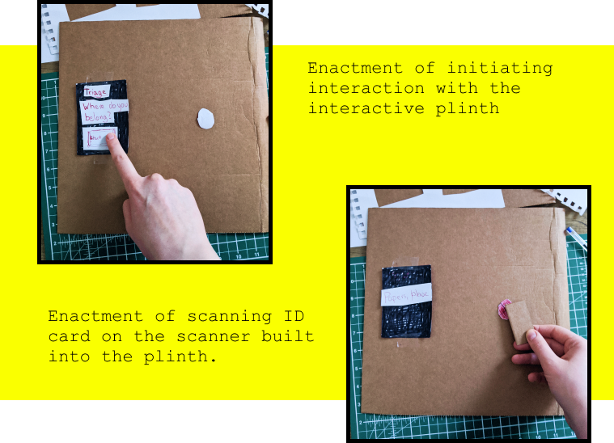

Visa Express:
Research
The Visa Express project is based on research gathered through using the Question Formulation Technique, where we discovered early on that automation within VISA application processes had led to severe issues for the applicants, resulting in rejections, no chance for appeals and potential removal from the country.
Desk Research
Research into automated migration processes uncovered the recent implementation of several types of surveillance and security technologies at border controls as well as the issues caused by automation of VISA application proccesses.
Design-Based Research
The Visa Express project went through several phases of iteration before a final design was formed. Early explorations were made and enacted through lo-fi cardboard prototypes.
First Iteration
Second Iteration
The interactive box format was iterated and changed to an interactive plinth format instead. Interaction was enacted through lo-fi cardboard cut-outs, mimicking the top plane of the plinth.
